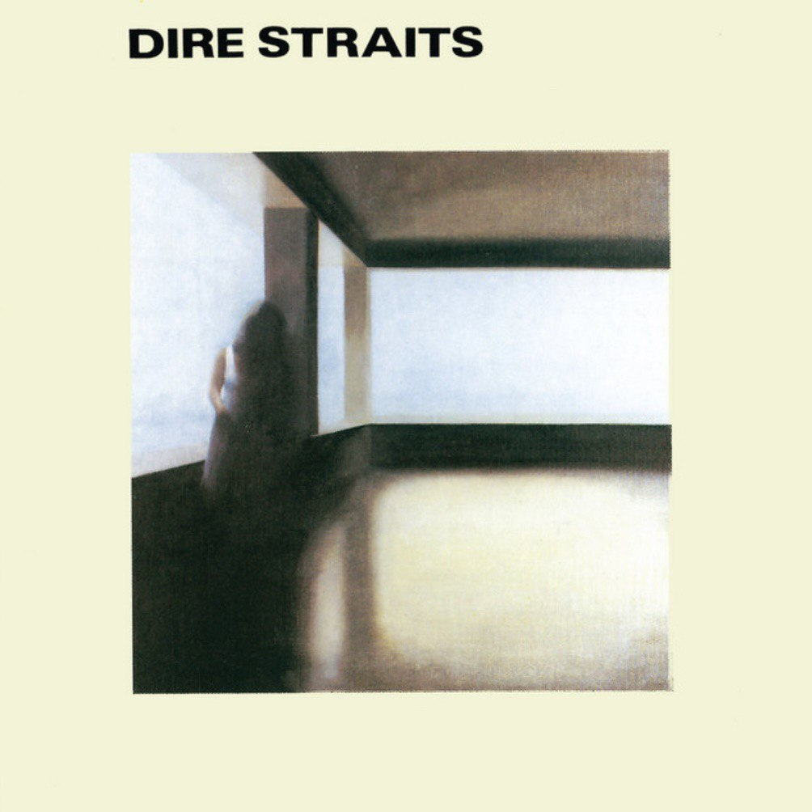

Lyrics
You get a shiver in the dark It's raining in the park but meantime South of the river you stop And you hold everything A band is blowing Dixie double four time You feel all right when you hear that music ring
You step inside but You don't see too many faces Coming in out of the rain To hear the jazz go down Too much competition Too many other places But not too many horns can Make that sound Way on downsouth Way on downsouth London town
You check out Guitar George He knows all the chords Mind he's strictly rhythm He doesn't want to make it cry or sing And an old guitar is all He can afford When he gets up under the lights To play his thing
And Harry doesn't mind If he doesn't make the scene He's got a daytime job He's doing alright He can play honky tonk Just like anything Saving it up for Friday night With the Sultans with the Sultans of Swing
And a crowd of young boys They're fooling around in the corner Drunk and dressed in their best brown baggies And their platform soles They don't give a damn about Any trumpet playing band It ain't what they call rock and roll And the Sultans played Creole
And then the man He steps right up to the microphone And says at last just As the time bell rings 'Thank you goodnight now It's time to go home' And he makes it fast with one more thing 'We are the Sultans Sultans of Swing'
Album picture

Подготовлено Чернявским Ильёй